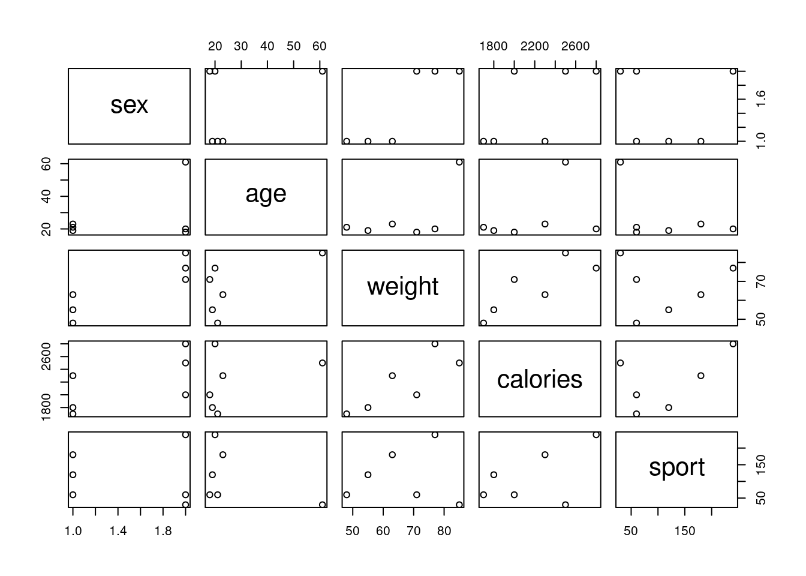
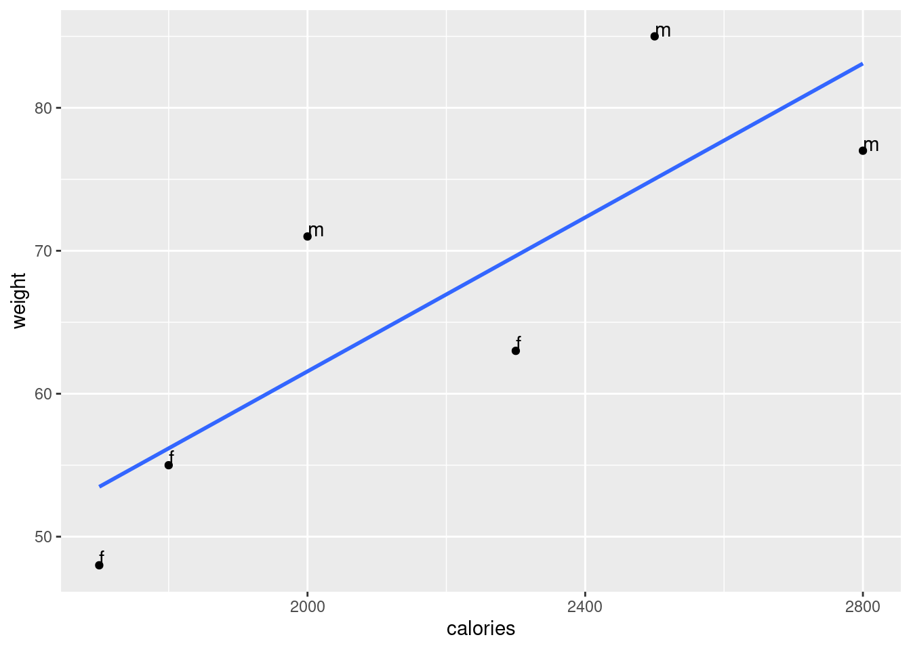

20 Script: exe_calories.R
# 1
#Stephan Huber, 000, 2020-May-30
# 2
# setwd("/home/sthu/Dropbox/hsf/22-ss/dsb_bac/work/")
# 3
rm(list=ls())
# 4
if (!require(pacman)) install.packages("pacman")
pacman::p_load(tidyverse, haven)
# 5
# cross-section
# 6
sex <- c("f", "f", "f", "m", "m", "m")
age <- c(21, 19, 23, 18, 20, 61)
weight <- c(48, 55,63,71,77,85)
calories <- c(1700,1800,2300,2000,2800,2500)
sport <- c(60,120,180,60,240,30)
df <- data.frame(sex, age, weight, calories, sport)
# write_csv(df, file = "/home/sthu/Dropbox/hsf/exams/21-04/stuff/df.csv")
# write_csv(df, file = "/home/sthu/Dropbox/hsf/github/courses/dta/df-calories.csv")
df <- read_csv("https://raw.githubusercontent.com/hubchev/courses/main/dta/df-calories.csv")## Rows: 6 Columns: 5
## ── Column specification ────────────────────────────────────────────────────────────────────────────────────────────────────────────────────
## Delimiter: ","
## chr (1): sex
## dbl (4): age, weight, calories, sport
##
## ℹ Use `spec()` to retrieve the full column specification for this data.
## ℹ Specify the column types or set `show_col_types = FALSE` to quiet this message.## sex age weight calories sport
## Length:6 Min. :18.00 Min. :48.0 Min. :1700 Min. : 30
## Class :character 1st Qu.:19.25 1st Qu.:57.0 1st Qu.:1850 1st Qu.: 60
## Mode :character Median :20.50 Median :67.0 Median :2150 Median : 90
## Mean :27.00 Mean :66.5 Mean :2183 Mean :115
## 3rd Qu.:22.50 3rd Qu.:75.5 3rd Qu.:2450 3rd Qu.:165
## Max. :61.00 Max. :85.0 Max. :2800 Max. :240# 8
df %>%
group_by(sex) %>%
summarise(mcal = mean(calories),
sdcal = sd(calories),
mweight = mean(weight),
sdweight = sd(weight)
)## # A tibble: 2 × 5
## sex mcal sdcal mweight sdweight
## <chr> <dbl> <dbl> <dbl> <dbl>
## 1 f 1933. 321. 55.3 7.51
## 2 m 2433. 404. 77.7 7.02# 9
# discussed in class
# 10
# Many things can be mentioned here such as the use of colors
# (red/blue is not a good choice for color blind people),
# the legend makes no sense as red and green both refer to \textit{sport},
# the label of `f' and `m' is not explained in the legend,
# rotating the labels of the y-axis would increase readability, and
# both axes do not start at zero which is hard to see.
# Also, it is a common to draw the variable you want to explain
# (here: calories) on the y-axis.
# 11
plot(df)
## [1] 0.5330615## [1] 0.8281972# 13
ggplot(df, aes(x = calories, y = weight, label=sex )) +
geom_point() +
geom_text(hjust=0, vjust=0) +
stat_smooth(formula=y~x, method="lm", se=FALSE)## Warning: The following aesthetics were dropped during statistical transformation: label
## ℹ This can happen when ggplot fails to infer the correct grouping structure in the data.
## ℹ Did you forget to specify a `group` aesthetic or to convert a numerical variable into a factor?
##
## Call:
## lm(formula = weight ~ calories, data = df)
##
## Residuals:
## 1 2 3 4 5 6
## -5.490 -1.182 -6.640 9.435 -6.099 9.976
##
## Coefficients:
## Estimate Std. Error t value Pr(>|t|)
## (Intercept) 7.730275 20.197867 0.383 0.7214
## calories 0.026917 0.009107 2.956 0.0417 *
## ---
## Signif. codes: 0 '***' 0.001 '**' 0.01 '*' 0.05 '.' 0.1 ' ' 1
##
## Residual standard error: 8.68 on 4 degrees of freedom
## Multiple R-squared: 0.6859, Adjusted R-squared: 0.6074
## F-statistic: 8.735 on 1 and 4 DF, p-value: 0.04174# 15
# 1) An increase of 100 calories (taken on average on a daily basis) is associated
# - on average and ceteris paribus - with 2.69 more of kg the participants are
# pretended to weight.
# 2) The estimated coefficient $beta_1$ is statistically significantly different to zero
# on a significance level of 5%.
# 3) About 60 % of the variation of the weight is explained by the
# estimated coefficients of the empirical model.
# 16
# For omitted variable bias to occur, the omitted variable `Z` must satisfy
# two conditions:
# 1) The omitted variable is correlated with the included regressor
# 2) The omitted variable is a determinant of the dependent variable
# 17
# discussed in class
# unload packages
pacman::p_unload(tidyverse, haven)## The following packages have been unloaded:
## tidyverse, haven